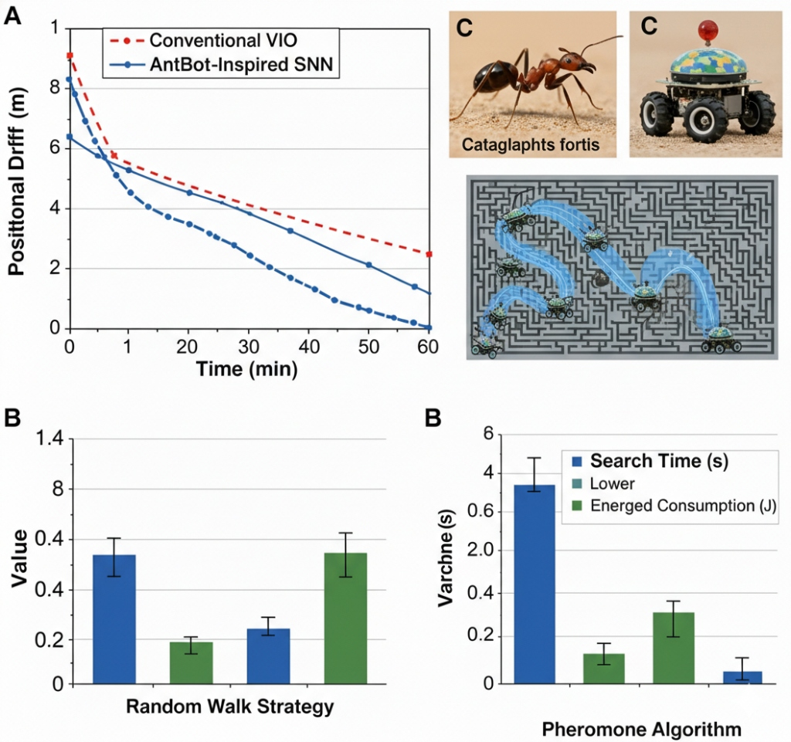
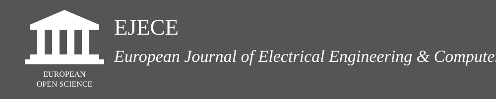

Graduate Research Assistant at the Beijing Institute of Technology
I research bio-robotics, autonomous navigation, sensor fusion, and neuromorphic methods. My work focuses on developing robust navigation frameworks for GPS-denied environments through sensor fusion, neuromorphic approaches, and advanced simulation.
To learn more about my projects please visit my personal website.
Email: chandan [at] bit [dot] edu [dot] cn
Location: Beijing, China
News / Experience
-
Nov 2025 Nature-inspired navigation system helps robots traverse complex environments without GPS. Our recent work on AntBot-inspired Spiking Neural Networks (SNN) and pheromone algorithms is featured in TechXplore.

- Dec 2024 Architecting a smart wheelchair walker with a cloud platform for real-time monitoring and remote assistance.
- Sep 2024 Started Graduate Research Assistantship at BIT; working on bio-inspired swarm robotics and GPS-denied navigation.
Publications
 Bio-inspired navigation systems for robots
Bio-inspired navigation systems for robots
C. Sheikder et al.
Nature Reviews Bioengineering (2025)
Paper
C. Sheikder et al.
Autonomous Artificial Intelligence (2026)
Paper
C. Sheikder et al.
Sensors (2026)
Paper
 Soft Computing Techniques Applied to Adaptive Hybrid Navigation Methods for Tethered Robots
Soft Computing Techniques Applied to Adaptive Hybrid Navigation Methods for Tethered Robots
C. Sheikder et al.
Journal of Field Robotics
Paper
M. M. Haque, Chandan Sheikder, Q. Hu
2022 IEEE Conference on Interdisciplinary Approaches in Technology and Management for Social Innovation (IATMSI)
Paper
Chandan Sheikder, Md Musa Haque, et al.
Journal of Aviation/Aerospace Education & Research (2025)
Paper
Zhengqing Zuo, Ning Pei, Weimin Zhang, et al. (including Chandan Sheikder)
Nondestructive Testing and Evaluation (2026)
Paper
Chandan Sheikder, Weimin Zhang, et al.
Astronautics (2026)
Paper

Retroactive about Robotics Application with Artificial Intelligence toward the Global Pandemic Scenario Md Musa Haque, Chandan Sheikder, Rodrigue Djembong, Md Tawsif Wahid Piash
European Journal of Electrical Engineering and Computer Science (2023)
Paper